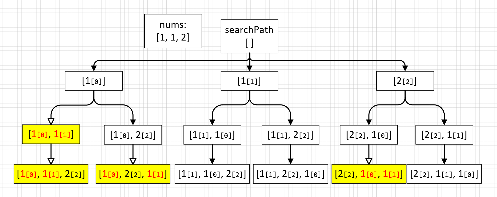
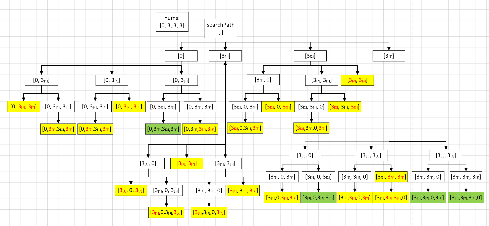
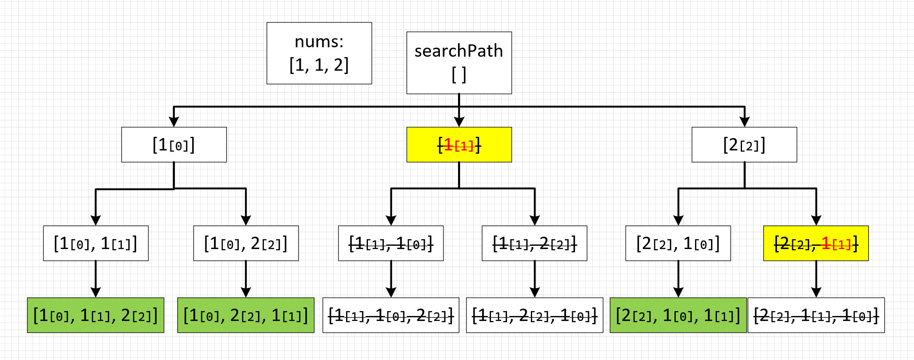

47. 全排列 II⭐⭐#

分析#
有重复序列的全排列也是全排列，先解决全排列问题这个问题就解了一半
序列中包含重复数字，会导致结果中产生很多重复组合
消除重复有两种方法，一种暴力从全排列结果中遍历去重（就不推荐了，但是能解决问题）
一种是求解过程中就跳过重复项的魔法
重复组合问题#
消除重复组合的魔法
直接上结论：
将原始数列排序，以保证相同的数字都在一起
在本轮遍历过程中，如果这个数字按索引正序连续出现过2次（不是3次或更多），就跳过
if (visited[i] ||
(i > 0 && visited[i - 1] && nums[i] == nums[i - 1])) {
continue;
}
这个结论我想了很久都没相通，脑子这个好东西我实在是不够用，画个图来辅助理解：
这个魔法生效的前提是要有序，所以需要对nums数列进行排序
根据图示，相同数字连续出现两次时会被排除掉，按索引正序出现（红黄标记）
相同数字按索引逆序同时出现则被保留
任意两个相同数字之间的相对位置关系只有两种，要么是索引正序，要么是索引逆序，这里刚好排除了一半 
换一种写法也可以，这次刚好过滤掉相同数字逆序组合（没办法承认我看漏了官方题解的感叹号😓）
if (visited[i] ||
(i > 0 && !visited[i - 1] && nums[i] == nums[i - 1])) {
continue;
}
这魔法太神奇，我又验证了一下数列\([3,3,0,3]\) 
题解：基于\(Visited\)魔法#
searchPath表示当前搜索路径，visited表示当前节点是否已添加到路径先按照无重复全排列思路做一遍
然后加上过滤条件防止逆序冲入即可
vector<vector<int>> permute(vector<int>& nums) {
// 保存结果
vector<vector<int>> result;
// 保存访问状态
vector<bool> visited(nums.size(), false);
// 保存访问路径
vector<int> searchPath;
// 深度优先搜索所有组合
deepSearch(result, nums, searchPath, visited);
return result;
}
// 深度优先搜索
void deepSearch(vector<vector<int>>& result, vector<int>& nums,
vector<int>& searchPath, vector<bool>& visited) {
// 访问路径长度和数组nums一致表示已经访问到叶子节点，可以回溯了
if (nums.size() == searchPath.size()) {
// 保存本次搜索路径
result.emplace_back(searchPath);
return;
}
for (int i = 0; i < nums.size(); i++) {
// 跳过已访问过的索引
if (visited[i] ||
// 跳过相同数字索引正序连续出现的组合
(i > 0 && visited[i - 1] && nums[i] == nums[i - 1])) {
continue;
}
// 标记已访问索引
visited[i] = true;
// 将已访问的节点添加到当前搜索路径
searchPath.push_back(nums[i]);
// 递归搜索下一层
deepSearch(result, nums, searchPath, visited);
// 递归退出后恢复状态
visited[i] = false;
searchPath.pop_back();
}
}
题解：基于\(Swap\)魔法#
先基于\(Swap\)魔法假装无重复元素做一遍全排列，然后添加去重逻辑
去重的关键在于用一个额外的哈希表来避免当前节点的重入
另外，这里不需要预先排序 
vector<vector<int>> permuteUnique(vector<int>& nums) {
// 保存所有结果集
vector<vector<int>> result;
// 深度优先搜索所有组合
deepSearch(result, nums, 0);
return result;
}
void deepSearch(vector<vector<int>>& result, vector<int>& nums, int depth) {
// 搜索完成，回溯结果
if (depth == nums.size()) {
result.emplace_back(nums);
return;
}
// 去重关键：避免重复搜索
set<int> used;
// 注意：从当前深度开始往下递归，而不是从0开始
for (int i = depth; i < nums.size(); i++) {
// 去重
if (used.count(nums[i])) {
continue;
}
used.insert(nums[i]);
// 确认depth位的元素
swap(nums[depth], nums[i]);
// 递归访问下一个元素
deepSearch(result, nums, depth+1);
// 递归回溯后恢复状态，方便下一轮将其它元素填到这个位置
swap(nums[depth], nums[i]);
}
}
参考#
[1] 47. 全排列 II https://leetcode.cn/problems/permutations-ii/